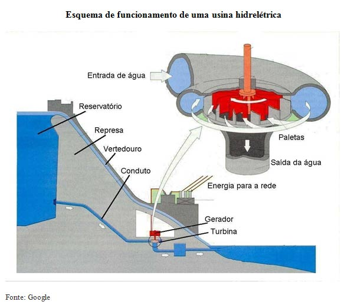

A Energia Eletrica pode ser obtida de várias maneiras, mas a principal fonte provém das usinas hidrelétricas. Como o próprio nome (hidrelétrica) já indica, a força da água é responsável pela geração de energia, e o processo consiste em grandes volumes de águas represadas que caem pelas tubulações fazendo girar turbinas acopladas a um gerador, produzindo assim energia elétrica. As redes de transmissão são responsáveis pela distribuição da energia elétrica para as diferentes regiões do país.
